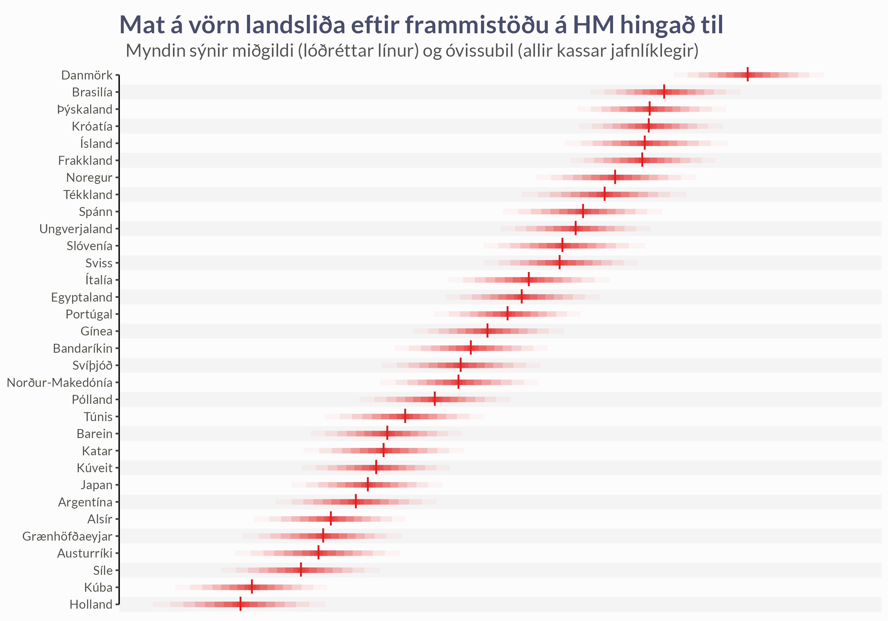
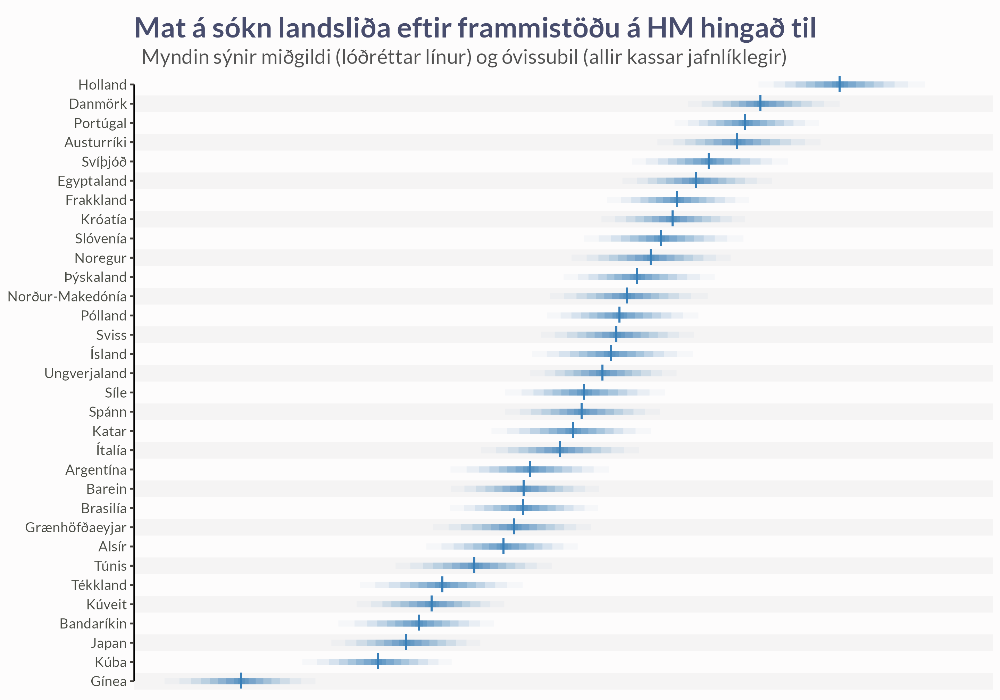
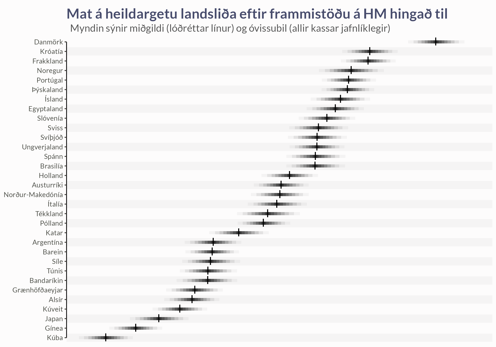
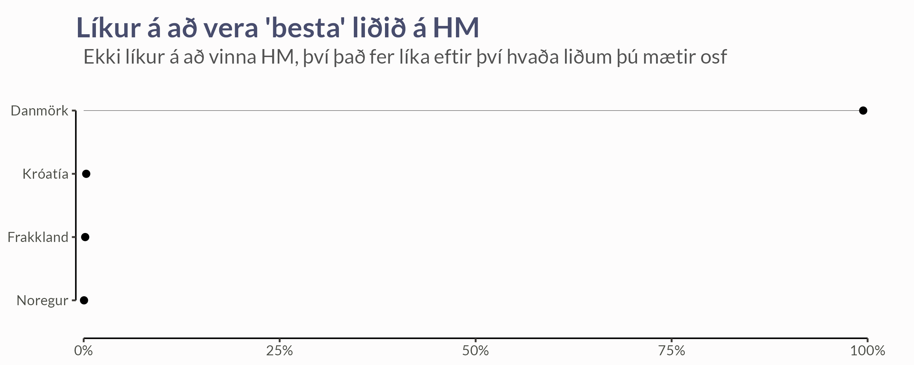
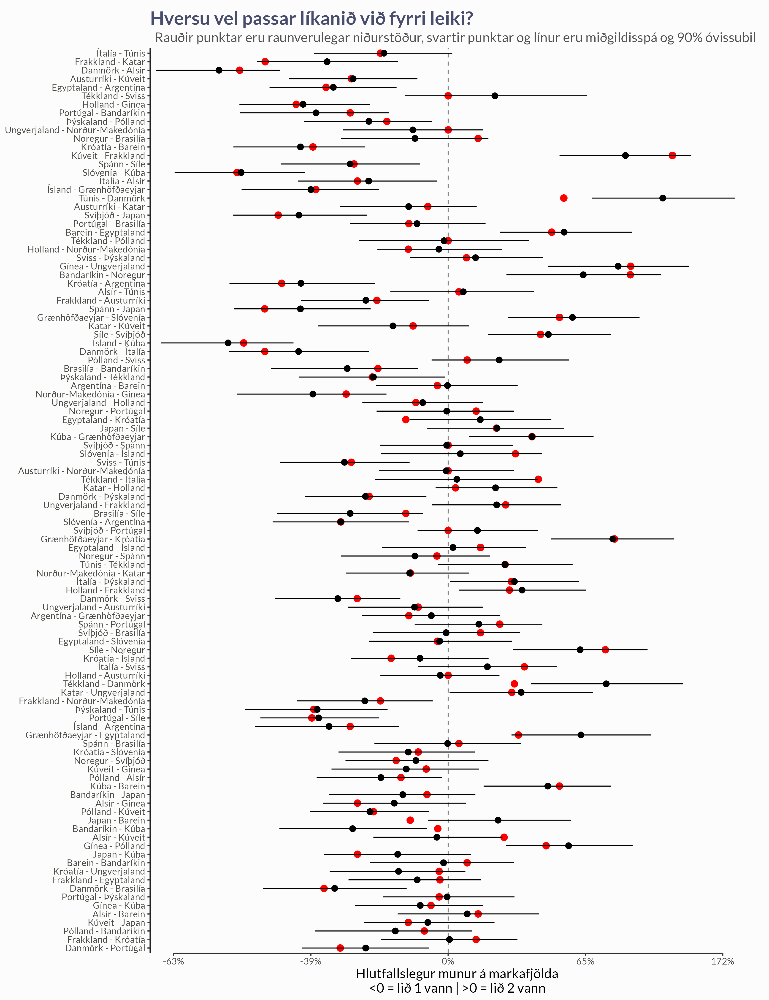

Um líkanið
Líkanið notar þrjár tegundir upplýsinga til að spá fyrir um getu landsliðs og notað það mat svo til að spá fyrir um líkur á sigri gegn andstæðingum:
- Skottilraunir og mörk
- Við skoðum hversu mörg skot hvert lið tekur í leik
- Við reiknum út hversu góð liðin eru í að nýta færin sín (skothittni)
- Skotnýting hvers liðs fer eftir sóknarstyrk þeirra og varnargetu andstæðinganna
- Markvarsla
- Við notum upplýsingar um hversu mörg skot markmenn verja
- Þetta hjálpar okkur að meta varnargetu liðanna betur
- Markamunur
- Við skoðum ekki bara hver vinnur, heldur líka með hversu mörgum mörkum
- Þetta gefur okkur betri mynd af raunverulegum styrk liðanna
- Stór sigur gefur til kynna að liðið sé verulega sterkara en andstæðingurinn
Með því að nota allar þessar upplýsingar saman getum við fengið nákvæmari mynd af styrk liðanna og spáð betur fyrir um úrslit komandi leikja.
Vörn
Myndin sýnir mat líkansins á varnargetu liðanna. Hærra gildi þýðir betri vörn - þ.e. liðið er líklegra til að verjast vel og fá á sig færri mörk. Óvissumörkin (rauðu kassarnir) sýna hversu öruggt matið er fyrir hvert lið.

Sókn
Hér sjáum við mat á sóknarstyrk liðanna. Hærra gildi bendir til betri sóknarleiks - liðið er líklegra til að skora mörg mörk og nýta færi sín vel. Eins og með vörnina sýna bláu kassarnir óvissuna í matinu. Athyglisvert er að bera saman styrk liða í sókn og vörn, því sum lið geta verið sterk í öðru en veik í hinu.

Heildargeta
Þessi mynd sýnir heildargetu liðanna, sem er samspil sóknar- og varnarstyrks ásamt öðrum þáttum sem hafa áhrif á frammistöðu. Hærra gildi þýðir að liðið er almennt sterkara. Þetta mat getur gefið hugmynd um líklega sigurvegara í leikjum, þó auðvitað geti alltaf komið upp óvænt úrslit.
Þótt lið 1 sé að jafnaði aðeins betra en lið 2, þá þýðir það bara að í leikjum þessara liða muni lið 1 að jafnaði skora fleiri mörk, en í hverjum tilteknum leik getur margt gerst. Ef tvö lið hafa sömu heildargetu metum við það svo að þau hafa bæti helmingslíkur á að vinna leikinn. Líkurnar verða svo ýktari eftir því sem munurinn á heildargetunni verður meiri.

Besta liðið
Ef við lítum yfir alla útreikninga tölfræðilíkansins getum við kíkt hvaða landslið sé líklegast til að vera metið sem “best”, það er með hæsta gildið á stikanum heildargeta. Hér er þó mikilvægt að hafa í huga að þótt lið sé með hærra mat á heildargetu, þýðir það ekki að það muni alltaf vinna alla leiki gegn öllum öðrum liðum. Í raun þýðir þetta bara að “besta” liðið á meiri en helmingslíkur á að vinna leiki gegn öðrum liðum, og líkurnar aukast eftir því sem munurinn á heildargetunni verður meiri.

Mátsgæði
Mikilvægur hluti tölfræðilegrar greiningar er að meta hversu vel líkanið passar við gögnin. Með því að bera saman raunveruleg úrslit við spár líkansins getum við séð hvort það nái að fanga undirliggjandi mynstur í leikjunum. Eins og sjá má á myndinni að neðan eru flest úrslit innan 90% óvissumarka líkansins, sem bendir til þess að líkanið sé að ná að lýsa frammistöðu liðanna með viðunandi hætti.

Ítarlegri lýsing á Bradley-Terry líkaninu
Hér er aðeins ítarlegri lýsing á því hvernig líkanið er uppbyggt og hvernig það nýtir stærðfræði til að draga fram heildargetu, sóknarstyrk og varnarstyrk liðanna í handbolta.
Grunnhugmynd Bradley-Terry líkana
Kjarni Bradley-Terry líkansins felst í að meta líkur á sigri eins liðs gegn öðru út frá hlutfallslegri getu þeirra. Í hefðbundnu líkani er gert ráð fyrir að hvert lið \(i\) hafi einhverja ómælda getu, \(\beta_i\). Þá eru líkurnar á að lið \(i\) sigri lið \(j\) gefnar með:
\[ P(\text{Sigur } i \text{ gegn } j) = \frac{\exp(\beta_i)}{\exp(\beta_i) + \exp(\beta_j)}. \]
Með því að endurskrifa þetta á logit-formi fæst:
\[ \log\!\biggl(\frac{P(\text{Sigur } i)}{1 - P(\text{Sigur } i)}\biggr) = \beta_i - \beta_j. \]
Í handbolta höfum við ekki bara upplýsingar um hvort liðið vann, heldur líka með hversu miklum mun.
Útvíkkað líkan fyrir sókn og vörn
Í okkar líkani er hæfnistuðlum liðanna skipt í annars vegar sóknarstyrk (\(O\)) og hins vegar varnarstyrk (\(D\)). Við getum því sett upp eftirfarandi:
- \(O_i\) táknar getu liðs \(i\) í sókn,
- \(D_i\) táknar getu liðs \(i\) í vörn.
Heildargeta hvers liðs, \(\alpha_i\), er síðan nálguð með línulegri summu sóknar- og varnarstuðla og viðbótargildis, \(\gamma_i\), sem nær utan um aðra mögulega þætti:
\[ \alpha_i = \underbrace{O_i + D_i}_{\text{helsti hluti getu}} + \gamma_i. \]
Greining á mörkum og markamun
Til að draga fram enn nákvæmari mynd af frammistöðu liða nýtir líkanið upplýsingar um skottilraunir \((S_1, S_2)\) og samantekt á markvörslum (\(GK_\text{saves}, GK_\text{shots}\)) fyrir allt mótið. Fjöldi marka sem liðin skora í leik \((G_1, G_2)\) er stikaður út frá tvíkostadreifingu með logit vörpun:
\[ \begin{gathered} G_1 \sim \text{BinomialLogit}\left(S_1, \mu_S + O_1 - D_2\right) \\ G_2 \sim \text{BinomialLogit}\left(S_2, \mu_S + O_2 - D_1\right) \end{gathered} \]
þar sem \(\mu_S\) er meðalskotnýting allra liða. Þar sem gögnin hjá IHF (dæmi) segja ekki til um hvort skot hafi verið varið eða farið út fyrir notum við líka samantekin gögn um markvörslu liðanna og stikum það á svipaðan máta.
Að lokum er logrinn af hlutfallslegum markamun stikaður með t-dreifingu.
\[ \log\left( \frac{G_2}{G_1} \right) \sim t\left(\nu, \alpha_2- \alpha_1, \sigma\right), \]
þar sem \(\nu\) eru frígráðurt-dreifingarinnar og \(\sigma\) er staðalfrávikið.
Úrtök úr eftirádreifingu líkansins eru svo fengin með Stan.